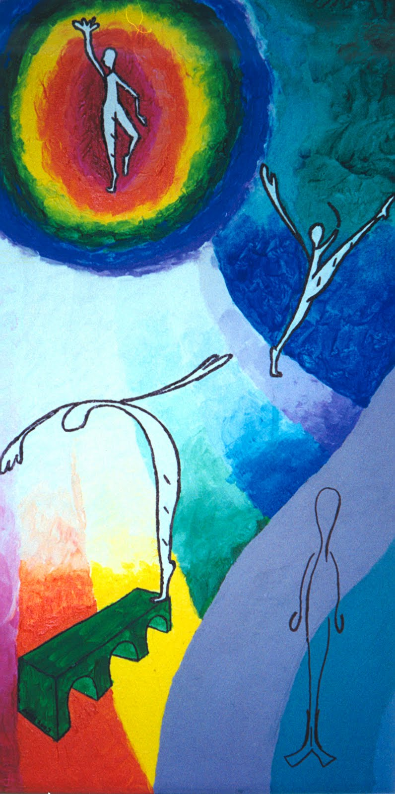
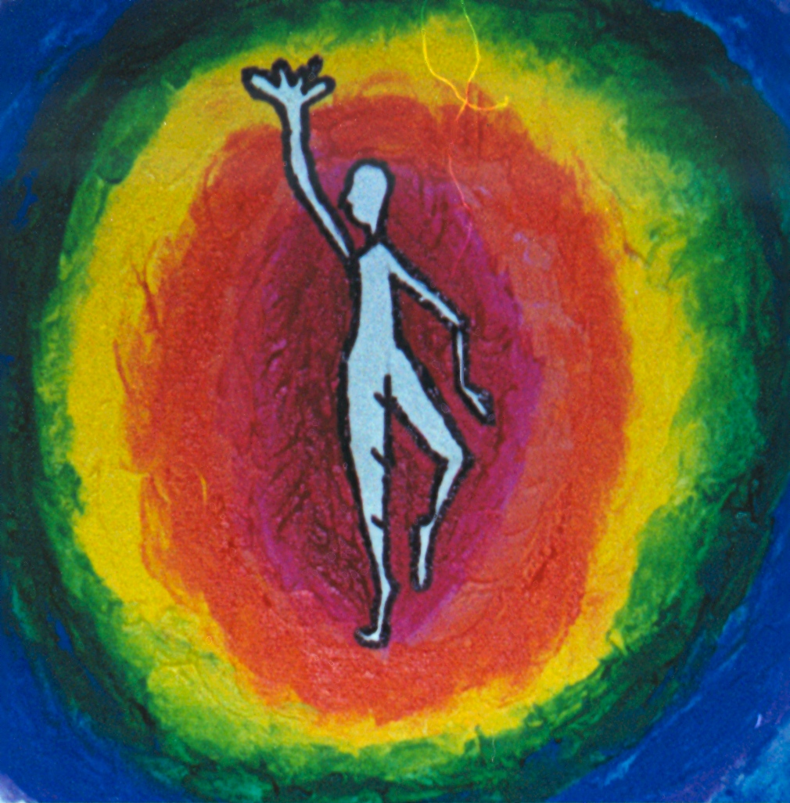
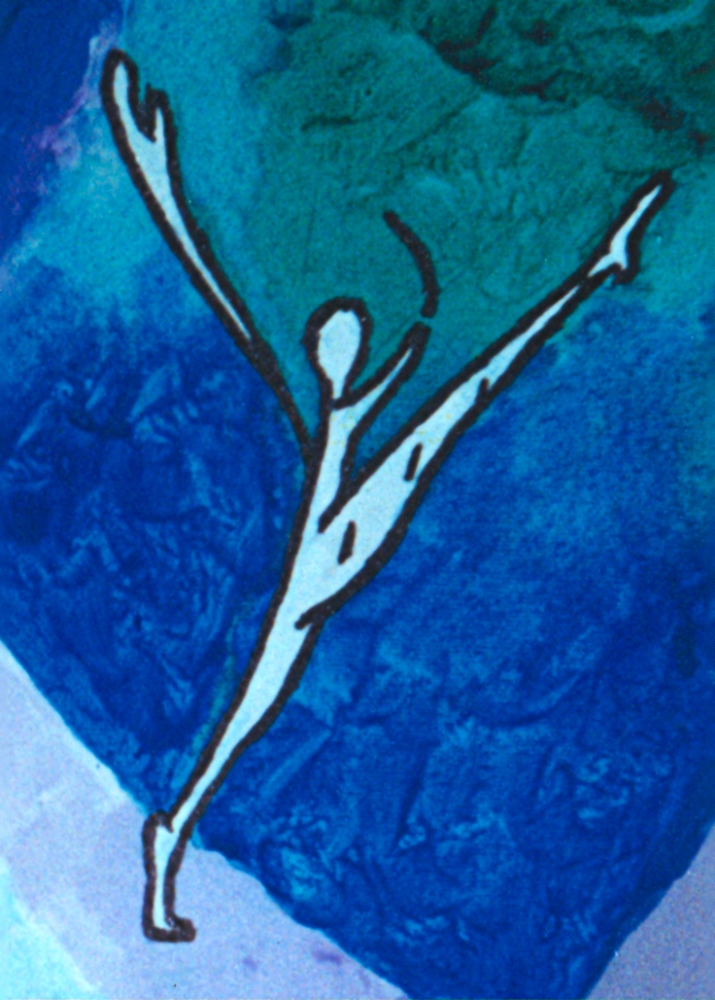
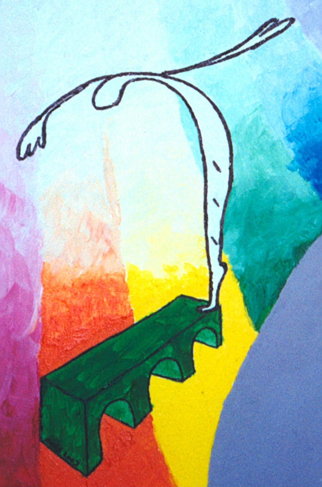
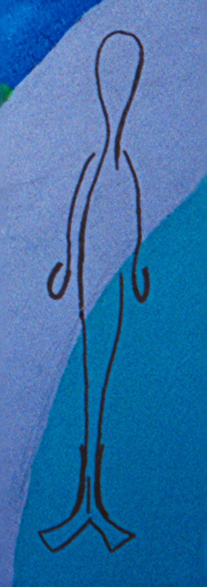

ANDA VITOLS' STUDIO
Trīnīši - Triplets
Trīnīši - illustration, 2000. Acrylic on stretched canvas.
|
 |
Trīnīši means triplets. In the illustration, they represent the primary anthropomorphic goddesses of ancient Latvia. I gave them names. "Saule deja" (Sun dancing) is on top and is the essence of life. "Laima deja" (Luck dancing) and "Māra deja" (Māra dancing) is the goddess of earth. They are dancing and in bright colours as they help us humans on earth with our lives.
Once we die, we are looked after "Velu Mate" (The Goddess Mother of the Afterlife). She is standing still with arms to the side, in greyed out colours. "Vela" directly translated means laundry. When we are dead we are like laundry. We no longer have form on earth, but out essence remains.
|

Saule is the essence of life. |

Laima is fate and luck. |

Māra looks after all that lives on earth. |

Veļa mother looks after all in the after life. |
blog by Anda, January 2012
back
|